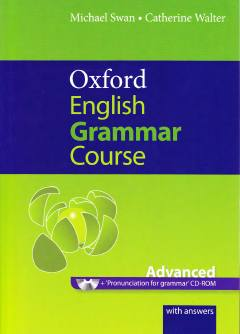

OEIlg'or darajadagi ingliz tili o'rganuvchilar uchun mo'ljallangan keng qamrovli grammatika qo'llanmasi.
Ushbu kitob ilg'or darajadagi ingliz tili o'rganuvchilar uchun mo'ljallangan bo'lib, chuqurlashtirilgan grammatika mashqlari va tushuntirishlarini o'z ichiga oladi. Michael Swan va Catherine Walter tomonidan tayyorlangan ushbu qo'llanma tilni mukammal o'zlashtirish va amalda qo'llashda muhim manba hisoblanadi.